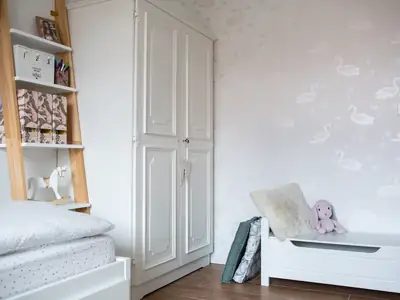
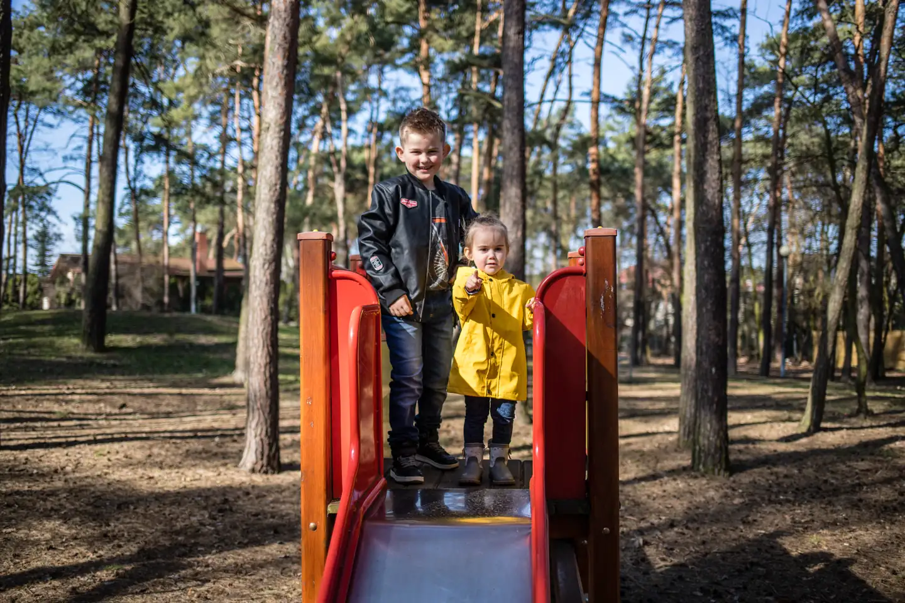
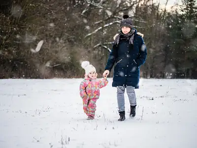
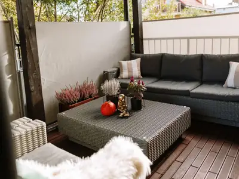
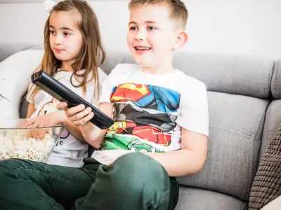
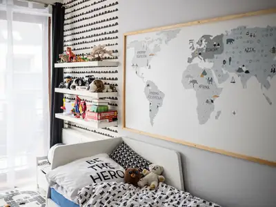
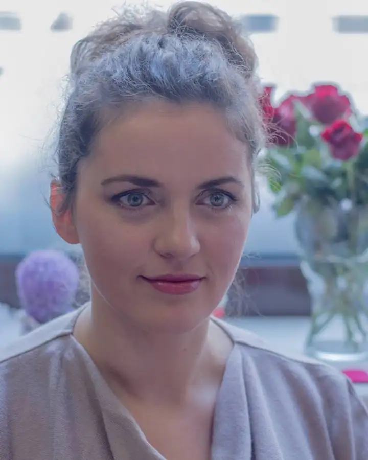

Blog parentingowy z Wrocławia o życiu w biegu z trójką dzieci
Piszę o macierzyństwie, domu i kuchni. Każdy produkt najpierw dokładnie testuję, dopiero potem polecam.
Czytaj bloga
Pisze Elwira Zbadyńska, mama trójki
Z bloga
Jak skompletować garderobę kapsułową w ciąży?

Ile wspólnego mają moje dzieci z małymi Norwegami?

Pierwsze, jesienne kadry z nowego tarasu

Konkurencja dla telewizji, czyli czym w domu zająć starsze dziecko?
Jak spakować rodzinę 2+3 na urlop, gdy zabraknie Wam miejsca w bagażniku?

Szybka i efektowna metamorfoza pokoju siedmioletniego chłopca
Strach, który każdego dnia towarzyszy mojemu macierzyństwu
Działy bloga
Od codzienności z dziećmi, przez kuchnię, po książki i kosmetyki, które sprawdziłam w domu.

Mam na imię Elwira
Jestem żoną i mamą trójki dzieci. Mieszkamy we Wrocławiu, mamy dom, mały ogród i psa. Lubimy czytać, podróżować, kreatywnie i aktywnie spędzać czas. Żyję w biegu i lubię biegać, najlepiej na świeżym powietrzu.
- Jako kobietaKocham latte bez cukru, czerwone wytrawne wino i książki. Jestem mistrzynią w delegowaniu zadań.
- Jako mamaTurlam się po dywanie, noszę, karmię i przewijam. Dużo piorę i czasem krzyczę.
- Jako żonaPakuję lunchboxy i perfekcyjnie wybieram koszule, ale potrafiłam zapomnieć o pierwszej rocznicy ślubu.
- Jako blogerkaZawsze dokładnie testuję produkty, zanim je polecę, bo wiem, ile znaczy rekomendacja.
Ściskam Cię mocno! Elwira
Współpraca z markami
Chętnie pomogę dotrzeć do młodych i przyszłych mam. Uważnie słucham oczekiwań, pilnuję jakości tekstów i ustalonych terminów.
- Merytoryczne wpisy z rekomendacją
- Profesjonalne sesje produktowe
- Posty na fanpage'u
- Przestrzeń na Instagramie
- Lokowanie produktów
- Krótkie filmy video
- Konkursy i rozdania
- Wpisy gościnne
Każde zlecenie wyceniam indywidualnie. Bazuję na współpracach płatnych i wystawiam faktury VAT.
Barter tylko przy produktach, które i tak planowałam kupić, przy nagrodach dla Czytelniczek albo w akcjach charytatywnych.
Zaufali mi
- Lidl
- Stokke
- Kinderkraft
- RoboJet
- Cool Mama
- Feedo.pl
- InviMed
- Tiny Star
- Ceba Baby
- Nanaf Organic
- Denley.pl
- Ekodrogeria
- Książki Burda
Zabiegana Mama także tutaj